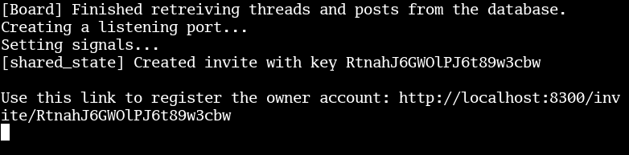
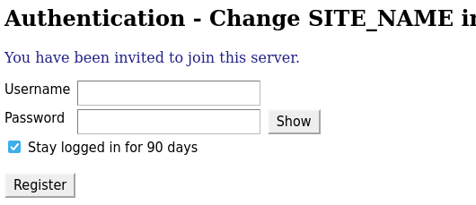
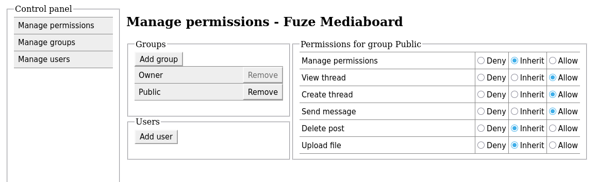
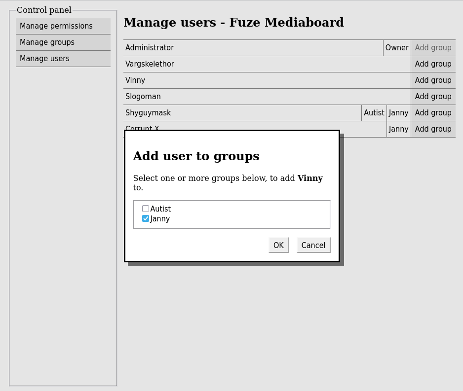
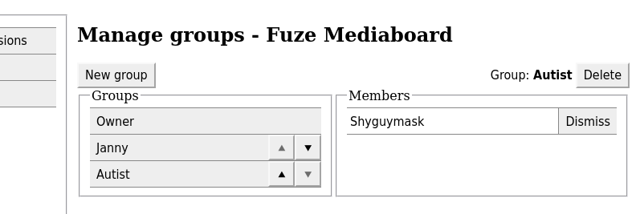

Fuze Mediaboard documentation/tutorial
Running a chat server may seem daunting, but hosting a basic instance is actually simple. As the tutorial progresses, you will start with running a local server, which will evolve into a platform viewable on the web.
Supported OS: FreeBSD, Linux, MacOS
A more condensed version for advanced users is available in the README on the GitHub page.
Getting started
Compiling from source
Prerequisites: Git, CMake, ImageMagick, GNU M4, Boost 1.88, SQLite OR PostgreSQL.
First ensure that submodules are downloaded. Use this command:
git submodule update --init --recursive
Now, to compile the server:
cmake -B build
cmake --build build
cmake --install build --prefix install
Running the server
- If compiled from source, execute
./install/bin/MediaboardServer - If using the AppImage, mark the file as executable and then run it
--create_owner to the command.


Making it public
Fuze mediaboard requires HTTPS for secure authentication to work. It is recommended to use a reverse proxy like NGINX. SSL certificates (required for HTTPS) can be obtained for free using Certbot.
Example NGINX config.
Ensure your IP is accessible to the outside world, using port forwarding if necessary.
Permissions
By default, only the owner can read and write messages.
- After logging in, click on the "Manage server" tab in the toolbar as an administrator.
- In the Manage permissions tab, click "Add group" and select "Public".
- Change setting to Allow for the permissions you want to grant.

Leaving a setting on Inherit means the permission will be searched by traversing up the inheritance tree (if applicable), and cascading down the group heirarchy until a non-inherited setting is found. If no permission setting is found by the time inheritance passes the server-level setting for Public, permission is denied.
If both a user and group permission are set on an object, the user setting takes priority.


Configuration
There exist two configuration files: config.ini and frontend/tokens.m4. Changes made to config.ini are read when the server starts. These options can also be passed directly in the command line, which will override what is set in the config file.
| config.ini | |
|---|---|
| server_port | Serves http://localhost:8300 by default. Change this if running multiple Mediaboard instances. |
| threads | Number of async threads. Values greater than 1 should be used for testing only. |
| max_http_body | For limiting the maximum size of user-uploaded files and to prevent abuse. |
| strip_metadata | Removes metadata from uploaded images (except SVG files). |
| thumbnail_file_exension thumbnail_size | Format must be supported by ImageMagick. Please note that any change in this setting will not apply to existing thumbnails - those will have to be converted manually. |
| avif_thumbnails heic_thumbnails webp_thumbnails mp4_thumbnails webm_thumbnails | Requires the respective formats to be installed in the instance of ImageMagick used - Use magick -list format to see if they are supported.Video formats require ffmpeg. |
| sqlite_database_file | Path to SQLite database file. Ignored when compiled with the PostgreSQL interface. |
|
postgresql_host postgresql_port postgresql_user postgresql_database_name | PostgreSQL database connection parameters. Only used when compiled with the PostgreSQL interface. |
tokens.m4 require rebuilding the project via CMake.
| frontend/tokens.m4 | |
|---|---|
| _SITE_NAME _FAVICON_URL _SHOW_WATERMARKS | Cosmetic settings. |
| _THUMBNAIL_FILE_FORMAT | Deprecated; ignored on files uploaded since 0.1.2 |
| _THUMBNAIL_SIZE | Maximum thumbnail size in pixels. Should match thumbnail_size in config.ini for best results. |
| _FILE_SIZE_LIMIT_MB | Returns error message when user attempts to upload a file larger than this. It is recommended to also edit max_http_body in config.ini if changing this. |
Optional: Using PostgreSQL as the database
Alternatively, you can build with the PostgreSQL interface instead:
cmake -B build -D FUZEDBI_USE_POSTGRES=ON
Set the following options in config.ini to correspond to the database:
postgresql_host,
postgresql_port,
postgresql_user, and
postgresql_database_name.